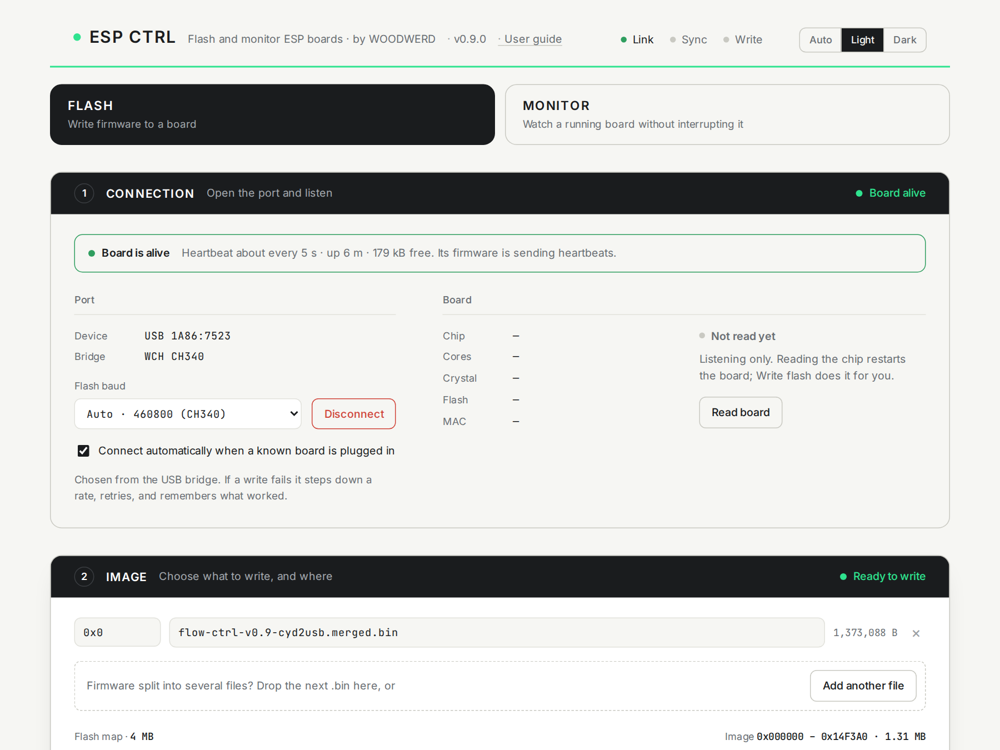
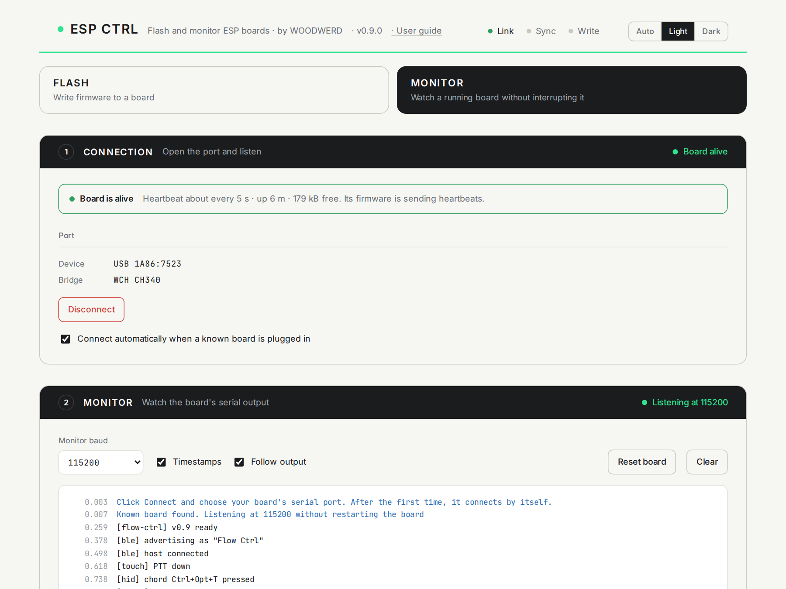
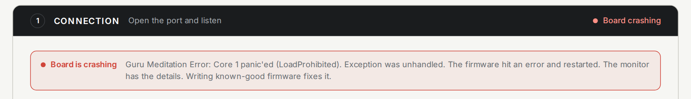
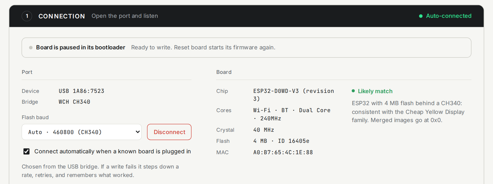

What it is
ESP Ctrl does two jobs for ESP32-family boards, from a web page: it writes firmware to a board, and it watches a running board's serial output. It is a new front end on Espressif's open-source esptool-js, so the flashing itself is the same trusted engine, with a clearer experience around it.

What you need
- Chrome or Edge on a computer. ESP Ctrl talks to the board through Web Serial, which Safari, Firefox, phones and tablets do not have.
- A USB data cable. Many USB-C cables only carry power. If no port appears, the cable is the first suspect.
- A driver, sometimes. macOS and current Windows usually recognise the common USB bridge chips (CH340, CP210x) by themselves. If no port appears with a good cable, install the bridge maker's driver.
- An ESP board. Flashing works with the ESP8266 and the whole ESP32 family. Monitoring works with any USB serial device.
Flash a board
- Open ESP Ctrl and stay on the FLASH view.
- Plug the board in and click the green Connect button. Chrome shows a list of ports; pick your board. You only do this once per board type: after that ESP Ctrl connects by itself when the board is plugged in.
- Drop your firmware
.binonto the IMAGE area, or click Choose file. A single merged file goes at offset0x0, which is filled in for you. - Click Write flash. ESP Ctrl puts the chip into its bootloader, erases, writes, verifies, and restarts the board.
- Watch the new firmware boot in the MONITOR area at the bottom.
Connecting never interrupts your board. Only Write flash and Read board restart it, because reading or writing the chip requires its bootloader.
Monitor a board
- Switch to the MONITOR view.
- Connect (or just plug in a board ESP Ctrl already knows). The firmware keeps running, and its output streams into the log.
- Set Monitor baud to match your firmware. 115200 is the usual rate.

Top bar and views
| Control | What it does |
|---|---|
| Link · Sync · Write | Three small status lights. Link: the serial port is open. Sync: the chip's bootloader has answered, so it can be read and written. Write: pulsing while a write runs, green when it finishes, red if it fails. Link on with Sync red means the computer side is fine and the chip is not responding. |
| Auto · Light · Dark | The colour theme. Auto follows your computer's setting. Your choice is remembered. |
| FLASH · MONITOR | The two views. FLASH shows all three areas. MONITOR hides everything to do with writing and gives the log the room. You can switch at any time without disconnecting. Switching to MONITOR while the chip is paused in its bootloader restarts the board so there is something to watch. |
1 · Connection
The black header shows the area's state on the right, in colour: for example Not connected, Board running, or Board crashing.
Status strip
Once connected, a strip at the top of the area says what the board is doing, judged from what it prints. See Board health for every state.

Port
| Control | What it does |
|---|---|
| Device | The USB identity of the port, for example USB 1A86:7523. Browsers do not reveal the system port name, so this is what identifies the device. |
| Bridge | The USB-to-serial chip on the board, such as WCH CH340 or Silicon Labs CP210x. |
| Flash baud | The speed used for writing. Auto picks the fastest rate known to be reliable for that bridge chip. You can pick a rate by hand. See Baud rates. Hidden in the MONITOR view. |
| Connect / Disconnect | Green Connect opens the port and starts listening. It becomes a red-outlined Disconnect while connected. Disconnect before using the port in another program. |
| Connect automatically… | When ticked, ESP Ctrl connects by itself to a board it has been given permission for, on page load and when the board is plugged in. |
Board
The Board panel starts as Not read yet, because reading the chip restarts it. Click Read board to fill it in, or just click Write flash, which reads the chip as its first step.

| Field | Meaning |
|---|---|
| Chip | The exact chip and silicon revision. |
| Cores | Radio and processor features: Wi-Fi, Bluetooth, core count, top speed. |
| Crystal | The board's clock crystal frequency. |
| Flash | Flash memory size and the flash chip's ID. The size sets the scale of the flash map. |
| MAC | The chip's unique hardware address. Handy for telling identical boards apart. |
| Likely match / Detected | A plain-language read of what the board probably is. An ESP32 with 4 MB flash behind a CH340 is reported as consistent with the Cheap Yellow Display family. It is a likelihood, not a certainty: a generic dev board with the same parts looks identical. |
2 · Image
| Control | What it does |
|---|---|
| Offset box | The flash address where that file is written, in hex (0x10000) or decimal. It turns red if it is not a valid number. |
| File name, size, × | The loaded file and its size in bytes. × removes it. |
| Choose file / Add another file | Most firmware is one merged .bin at 0x0. Some build tools produce several files that each go at their own address, commonly bootloader 0x1000, partition table 0x8000, app 0x10000. Add each file and set its offset. A second file defaults to 0x10000. |
| Flash map | A bar representing the whole flash chip. The pale green span is where your image will land, and it fills solid green as the write progresses. The range and size are written above it. |
| Erase entire flash first | Wipes the whole chip before writing, including saved settings and Wi-Fi credentials. Use it when changing to different firmware or after a failed verify. Adds several seconds. |
| Verify after write | Reads a checksum back from the chip and compares it with your file. Leave it on. |
| Reset and open monitor when done | Restarts the board after a good write and shows its boot output. |
| Write flash | Starts the write. It is available once a board is connected and a valid image is loaded. |
| Stage · Done · Rate · Elapsed | Live progress: Connecting, Erasing, Writing, Verifying, Done (or Retrying, Failed), percent, speed, and time. |
3 · Monitor
| Control | What it does |
|---|---|
| Monitor baud | The speed your firmware prints at. Garbled text means the rate is wrong. 115200 is the norm; 74880 is the ESP8266 boot rate. |
| Timestamps | Shows seconds since the page opened at the start of each line. |
| Follow output | Keeps the log scrolled to the newest line. Untick it to read back through history. |
| Reset board | Restarts the board, like pressing its reset button. The monitor opens first, so you see the boot from its first line. |
| Clear | Empties the log. |
| Send a line | Types a line to the board (Enter or Send). Useful for firmware with a serial command prompt. |
Log colours: blue lines are ESP Ctrl's own notes, grey lines are the chip's boot ROM and heartbeats, green is success, red is an error, and plain text is your firmware. The log keeps the most recent 3000 lines.
While the chip is paused in its bootloader, the header reads Paused · chip is in its bootloader, because nothing is running to print.
Status colours
Every area header uses the same code.
| Colour | Meaning | Examples |
|---|---|---|
| Green | Good | Board running, Ready to write, Listening at 115200 |
| Orange | Needs you | Not connected, No image loaded, Download mode |
| Orange, pulsing | Working | Connecting, Working |
| Grey, hollow | Idle, nothing to do yet | Waiting for a connection, Paused |
| Red | Errors only | Port in use, Board crashing, Verify failed |
Board health
ESP Ctrl judges the board passively, from what it prints after you connect.
| Strip | Shown when |
|---|---|
| Board is running | The firmware is printing normal output. |
| Board is alive | The firmware is sending heartbeats. Shows the interval, uptime and free memory. |
| Connected, no output yet | Nothing printed for 4 seconds. Many firmwares are silent when idle, so this is not a fault. |
| Board is crashing | A panic, assert, watchdog or stack-overflow message appeared. The first crash line is quoted. |
| Stuck in a restart loop | Three or more restarts within 15 seconds. |
| Power problem (brownout) | The chip reported its supply voltage dipping. Try another cable or port, or a powered hub. |
| Board stopped responding | Heartbeats were arriving and have stopped for three intervals. |
| Download mode · No valid firmware | Nothing is running, so in the FLASH view ESP Ctrl reads the chip for you. |
| Paused in its bootloader | After Read board, or during a write. |
Limits worth knowing: a silent board cannot be judged, so a hung board with no heartbeat looks the same as a quiet healthy one. Crashes that happened before you connected are not seen. A red verdict clears itself after 20 seconds of normal output.
Heartbeat
To let ESP Ctrl tell alive from hung, have your firmware print a line containing #alive every few seconds. up= (seconds) and heap= (bytes) are optional.
// Arduino: call from loop()
static uint32_t last = 0;
if (millis() - last >= 5000) {
last = millis();
Serial.printf("#alive up=%lu heap=%u\n", millis() / 1000, ESP.getFreeHeap());
}
ESP Ctrl learns the interval by itself. If beats stop for three intervals (at least 6 seconds) it reports Board stopped responding.
Baud rates
With Auto, ESP Ctrl identifies the USB bridge chip before opening the port and picks a rate: 460800 for the CH340 (which drops data at 921600 on Cheap Yellow Display boards), and 921600 for CH9102, CP210x, FTDI and native-USB chips. Unknown bridges get 460800.
If a write fails, ESP Ctrl steps down one rate (921600 → 460800 → 230400 → 115200), reconnects, and writes again. It then remembers the rate that worked for that kind of bridge, on this computer.
Errors and fixes
| Message | What happened | What to do |
|---|---|---|
| No port in Chrome's list | The computer does not see the board. | Try a known data cable and another USB port. On older Windows, install the bridge driver. |
| Port in use | Another program has the port. | Close the Arduino IDE, a PlatformIO or other serial monitor, or another ESP Ctrl tab. Then Connect. |
| Chip not responding | The port opened but the chip did not enter its bootloader. | Hold BOOT, tap RST, release BOOT, then try again. Some boards always need this. |
| Board unplugged | The USB device disappeared. | Plug it back in. With auto-connect on, it reconnects by itself. |
| Write interrupted / failed | The connection dropped mid-write, even at the slowest rate. The flash is half written. | The board will not boot until a write completes. Check cable and power, then write again. This cannot brick an ESP chip: its bootloader is in ROM. |
| Verify failed | The data read back does not match the file. | Tick Erase entire flash first and write again. If it repeats, suspect unstable USB power or a worn flash chip. |
| Image too large | The image would run past the end of the flash. | Check the offset, or that the file is meant for this board. |
| Browser cannot reach serial ports | The browser has no Web Serial. | Use Chrome or Edge on a computer. |
Questions
Why does Chrome make me pick the port the first time?
It is a browser security rule: a page may only touch a device after you choose it. Chrome remembers the permission, which is what makes auto-connect possible afterwards.
Why does reading the board restart it?
The chip can only report its details, or accept firmware, from its built-in bootloader, and entering the bootloader means restarting. That is why ESP Ctrl listens first and only restarts the board when you ask for something that needs it.
My board restarted when I connected. Is that expected?
No. ESP Ctrl holds the two control lines low as it opens the port precisely to avoid that, but a few boards wire their reset circuit differently. Please report the board.
Where do I get a merged .bin?
Releases of most projects provide one. From PlatformIO or the Arduino IDE you usually get separate files; either add them individually with their offsets, or combine them first with esptool's merge command.
Can I run it offline?
Yes. Download the repository and run start.command on a Mac, or serve the site folder with any local web server. It must be served from localhost or https; opening the file directly will not work.
Privacy
ESP Ctrl runs entirely in your browser. It makes no network requests after the page loads: no analytics, no uploads. Your firmware files are read by the page and sent only down the USB cable. Settings (theme, view, remembered baud rates) are kept in your browser's local storage on this computer.